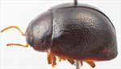
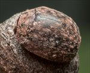
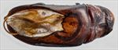
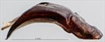
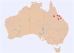

Click on images to enlarge


Male, Nebo, central Queensland


Female, Clermont, central Queensland


Aedeagus, dorsal view (Nebo, central Queensland)


Aedeagus, lateral view (Nebo, central Queensland)


Distribution
Name
Trachymela sp. Ta214
Reference specimen
2020-038a, Nebo, Central Queensland.
Adult Description
Length: ♂ 5.0–5.8 mm (n=4), ♀ 5.0–6.0 mm (n=9).
Colouration:
- Head: usually uniformly mid-brown to dark reddish-brown, less often with some darker brown colour around antennal insertions and along inside edge of eye; labrum usually pale brown, rarely much darker; mandibles dark brown with black tips; antennae uniformly straw-brown, with distal half of antennomere 11 noticeably darker.
- Pronotum: dark brown, concolorous with or fractionally darker than head, with two longitudinal broad bands of darker brown or black almost invariably present, one extending from behind inside edge of eye, the other from behind centre of eye and including the foveal peak, these bands sometimes extending for most of length of pronotum or, especially the outer one, may be shorter; anterior margin of pronotum in discal region often dark brown.
- Scutellum: brown, concolorous with or darker than adjacent area of pronotum, edged in darker brown or, rarely, completely black.
- Elytra: mostly dark brown, concolorous with the darker areas of pronotum, with thin, longitudinal wrinkles, especially in posterior half, that are a slightly paler shade; humeral callus concolorous with surrounds.
- Venter & Legs: venter reddish-brown, often almost uniformly so, but sometimes with head, prosternum and/or parts of thoracic sternites much darker or even black; legs of a much paler shade; epipleura usually partially black, especially along inner margins.
- Cuticular Wax: grey or light brown cuticular wax, very patchy and unevenly distributed; in many specimens very sparsely and unevenly distributed, in some specimens coverage much more dense though also uneven, with even a suggestion of lighter-coloured patches present on elytra aligned longitudinally.
Morphology:
- Shape: body very small, almost hemispherical, greatest height viewed laterally just a little in front of middle of elytral margin.
- Head: Head punctures moderate in size (pd ≈ 1.5–2 × ef) and evenly and densely distributed. Antennae short (AL/BL: ♂ 30–33%, ♀ 28-29%), filiform.
- Pronotum: almost evenly curved transversely, noticeably explanate at extreme margins, lacking a foveal depression, a small, usually approximately round elevated and very slightly less densely punctured area present in line with each eye; puncturation clearly impressed in discal area, similar in size or fractionally finer than those on head, evenly to slightly unevenly distributed and moderately dense, punctures much coarser in lateral marginal area; anterior margins join lateral margins in a smoothly rounded right angle, with lateral margin initially straight or very lightly curved for about ¾ of their length, then lateral margin curves inward noticeably before continuing to curve very gradually towards rear margin.
- Scutellum: surface lightly punctured, with punctures similar in size to adjacent area of pronotum but usually shallower, rarely rough and almost unpunctured.
- Elytra: surface evenly curved, punctures distinct and evenly and closely distributed (pd ≈ 1.5–2 pd) over whole of disc, becoming only fractionally larger in marginal area; interstices mostly flat with much smaller punctures scattered sparingly over them, interstices in posterior half a little more convex in places, with some interstices forming inconspicuous longitudinal weals; surface continuous under humeral callus; vertical extension of epipleura considerable (HCE/PW = 0.38–0.39).
- Venter: prosternal process narrowest anteriorly and gradually widening towards posterior, closed anteriorly; very sparse scatter of short setae at rear of prosternal process and mesoventrite; a single seta on anterior and median trochanter; anterior edge of metaventrite beveled, truncate.
Male Genitalia (Aedeagus):
- Dimensions: short (LPE/BL = 30–34%).
- Dorsal view: shaft widest at base, then parallel-sided to about middle of ostium, from where sides converge very gradually and smoothly towards apex, tip protruding slightly; dorsal surface behind ostium smoothly curved with dorso-median channel either absent or present only as a very shallow depression; ostium very large, extending for almost half of total length of aedeagus, roughly oval in shape, with rear of oval noticeably asymmetric, the left border of ostium (viewed from base) extending further towards centre line than right, rear border rather jagged in appearance.
- Lateral view: shaft curved lightly and evenly over whole length from base to almost apex, thinning towards apex over 30% of length, tip deflexed; flagellum thin.
Immature Stages
Unknown.
Similar species
- Ta59: a very similar species in general appearance, it may be distinguished from Ta214 by its legs not being lighter in colour than the ventral sclerites and by the absence of the pair of dark, longitudinal maculae behind the eyes.
- Ta92: another species that is found on the same host species over the same area of central Queensland. They are very similar in size and general appearance. They can be distinguished by the colour of the legs, which are lighter than the ventral sclerites in Ta214, but concolorous in Ta92. The elytral surface of the two species is also different, with Ta92 being brown with barely elevated, black verrucae scattered throughout, while that of Ta214 is dark brown, with weal-like, paler-coloured interstices present in the posterior half.
Notes
- Taxonomy: a small species, almost devoid of verrucae, possessing an unusual aedeagus with a very large, noticeably asymmetric oval ostium.
- Host Associations: collected from Blakella dallachiana and Corymbia dichromophloia.
Copyright © 2026. All rights reserved.